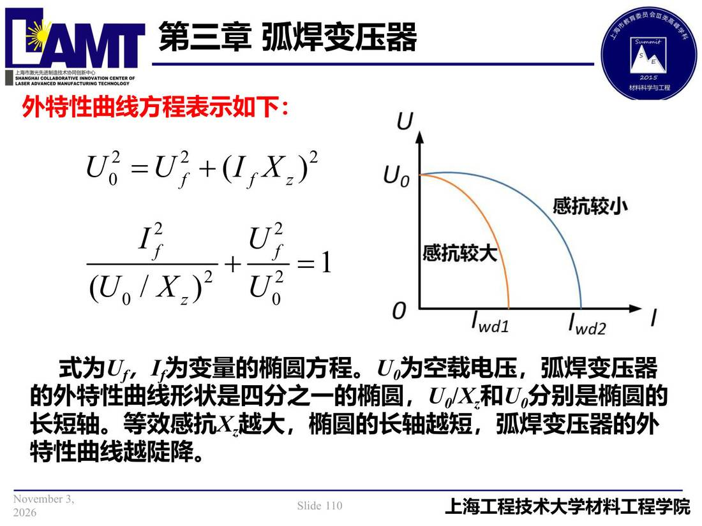

03 第3章 弧焊变压器/p110 外特性曲线方程表示如下
p110 外特性曲线方程表示如下
📄 原文：📄 弧焊电源 课件（PDF 第 110 页）（幻灯片 110/273；PDF 第 110 页）
外特性曲线方程表示如下

讲义原文
外特性曲线方程表示如下：
式为Uf，If为变量的椭圆方程。U0为空载电压，弧焊变压器的外特性曲线形状是四分之一的椭圆，U0/Xz和U0分别是椭圆的长短轴。等效感抗Xz越大，椭圆的长轴越短，弧焊变压器的外特性曲线越陡降。
本页标红（老师强调）
- 外特性曲线方程表示如下：
关联
- ← p109 · 本章索引 · p111 →
- 同组：3.3 弧焊变压器特性及分类 · 全章：弧焊变压器
- 概念卡：增强漏磁式弧焊变压器